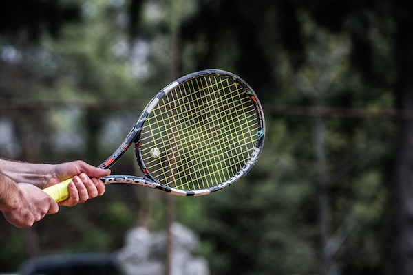
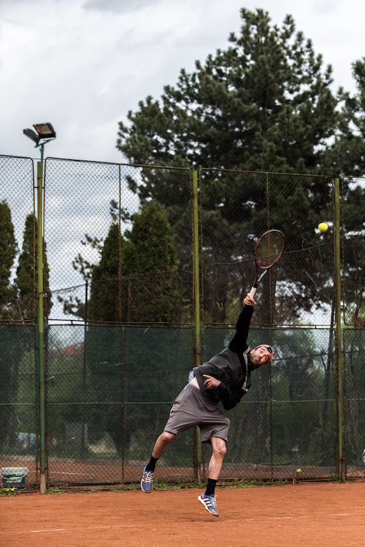

How many times have you watched the French Open, Roland-Garros on TV, felt an urge to run out in the park and try this sport called tennis? If you haven’t yet, let me tell you: 33 seems like a good age to do just that.
Why 33, you may ask. One of my closest friends has been a football fanatic all of his life. He used to breath, live, dream and play soccer 2-3 times a week, monthly, yearly, ever since he was a teenager.
Then, something happened after he turned 30. He became more curious about other sports and started diversifying his sports tv shows, tennis becoming more and more of an interest for him. One day, after watching a Roland-Garros final, he got so pumped and euphoric that he wanted to run outside and find the closest court and dominate it, just like we did back in the days after seeing a Michael Jordan performance.
So, the 33-year-old hooked up with a buddy, who’d been in contact with this sport for a long time, and finally stepped on the tennis court, with no idea whatsoever about how to kick at a ball. At first, he was so clumsy he almost broke the racquet trying to hit balls close to the ground.
But as time passed, he kept on returning, getting better and better, day after day, felling in love with a sport he had nothing in common with a few years ago.
Today, at the age of 36, he progressed through the amateur rankings, reaching the 7th level on the local tournaments, playing with retired pro players, having the time of his life. If you’d told him a decade ago that tennis will replace his beloved football, he’d laugh hard in your face and tell you you're a mad man.
But do you know what’s the most interesting part about this story? No matter how ‘old’ we might get, it’s never too late to find and pursue a passion, and definitely we should not fall into the “oh, I’m passed my prime, sporting activities are not for me anymore” trap!
Go out there, enjoy your life, try new things and work that body of yours, don’t let the couch-beer belly get to it first.